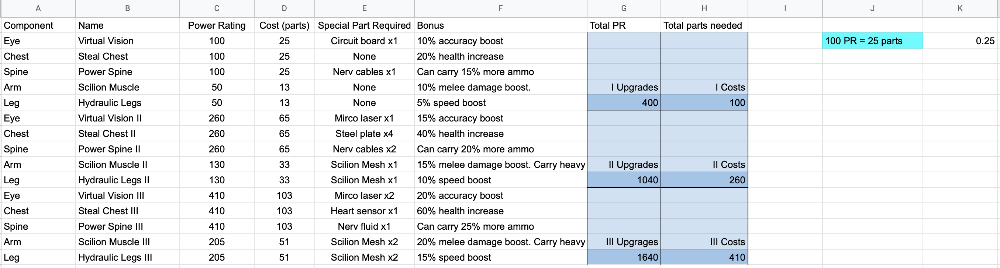
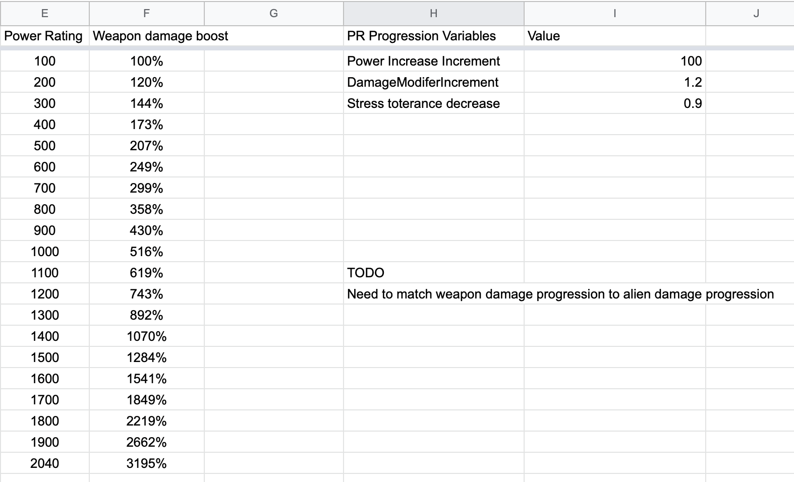
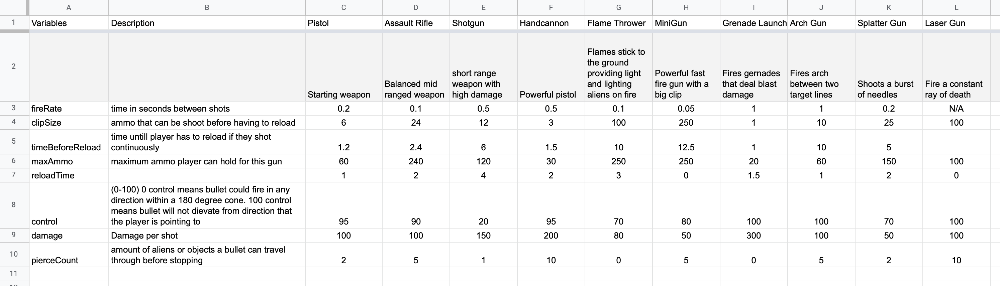
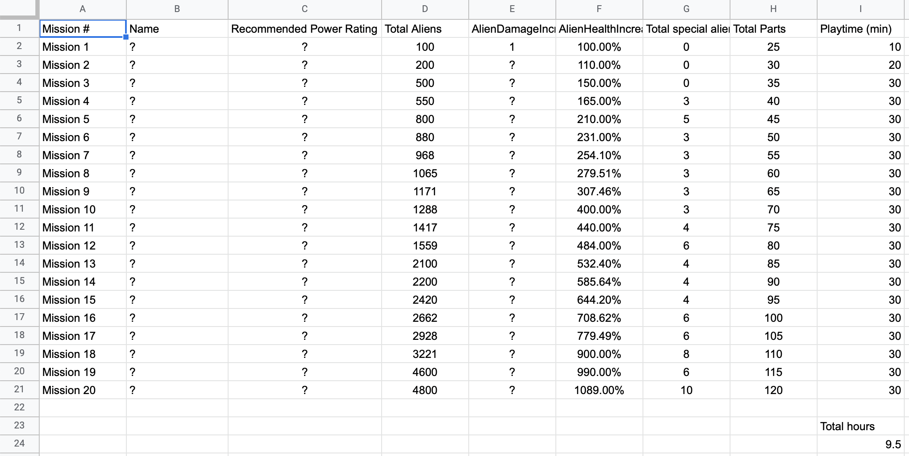
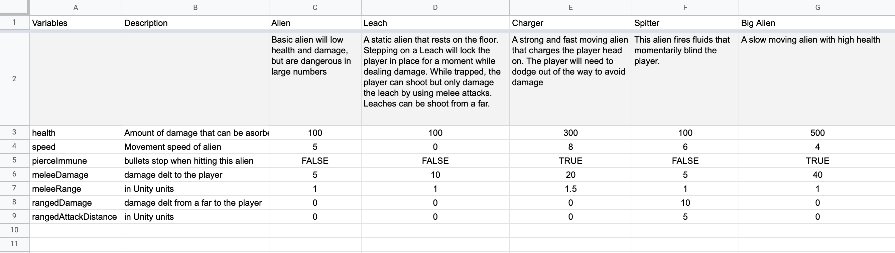

Summary
Hidden Fear is a design concept for a top-down shooter horror game set in a far away galaxy where you must replace your body with cybernetic components to become strong enough to escape an alien infested mega factor. Fight against hordes of aliens while scavenging resources to upgrade your character to progress through the levels and uncover the secrets of the factory.
Credits
Game Design: Cole Pergerson
Tools
Google sheets for game design
Pixaki and Aseprite for concept art
Links
Gameplay of Hidden Fear
Hidden Fear is a concept for a top-down 2D horde shooter with horror elements. The player would be shooting their way through huge masses of aliens while completing mission objectives. Players can run and dodge to avoid getting hit and slowed down by aliens. Players have limited ammo so they'll need to look for ammo sources as they explore the level while avoiding wasteful shots. Among the simple aliens, there will be special aliens that will challenge a certain skill or break the flow.
After finishing a mission, the player can use any parts they scavenged to invest into character or weapon upgrades. There will be a story between the main character and a sentient AI system that operates the factory the player is trapped in. There will be times where player can make choices in dialogue or in which mission they select that affect the story.
Here is a rough sketch I made using Unity
Inspiration
At the time I was playing Aliens: Fireteam Elite and Vertmintide 2 and I had an idea to turn those multiplayer experiences into a singleplayer one. I began to wondered how would the design change without multiplayer. The two biggest motivations for those co-op games, competition and social play, would be missing so couldn't just couldn't make a 1-to-1 translation. There were many directions I could have taken, but adding a strong character progression system and interactive story seemed exciting.
Character Progression
I usually like to start out by outlining the important variables I want to have access to in the code.
Here are all the upgrades I came up with. In the story, I wanted to the character to have to replace their organic body with cybernetic parts just to be powerful enough to escape. These cybernetic upgrades would improve gameplay stats tied to the character while also being a central part of the character gradual change to a cyborg. It was an idea that marriage story with gameplay.
With legs and arms being an exception, I didn't use numbers lower than 10%. Anything lower than that would feel like a rip-off and their effects would likely not be felt. Each upgrade increase a certain stat and the player's power rating.
An automatic leveling up system didn't make sense for Hidden Fear, so instead the player purchases character and weapon upgrades that increases a power rating (PR). The higher the PR, the more damage they deal. Originally I had an upgrade that increased damage, but I figured players would always get that one, so I gave the damage boost for free as a reward for investing in to their PR.
There are 10 different weapons that the player can experiment with. Most weapons use different ammo types to encourage the player to try all the weapons. I knew these numbers needed to be tested and would likely need to be changed, but I charted them anyways as a starting point. Anyone looking at this chart will have an idea of how the weapons are differentiated from another.
Mission Difficulty
This was the most difficult part of the design concept that I never fully completed. Like in Aliens: Fireteam elite and Vermintide 2, I wanted a way to rank mission difficulty with a number. In this case, I wanted to assign each mission a power rating recommendation, but what dictates that value?
I knew there were two broad sets of values that needed to be to be considered. First was the general difficulty of the aliens which could be measured by alien count and individual damage and health. Second was the player's current upgrades and weapon load out, which determines health, damage, speed, and accuracy. I assumed both of these value sets would need to be incorporated into the PR recommendation calculations.
Sadly, I couldn't figure out to mathematically set PR recommendations for each missions. There were too many variables to consider and I didn't know how to even begin. In the google sheets, you can see my attempts.
Alien Types
Each special alien challenges a different skill or tries to force the player to change their play style. The alien is the simplest enemy that is dangerous in numbers. I want these aliens be statisfying to kill in large numbers so that the player feels like a bad-ass. Leaches are aliens that don't move and penalize the player for stepping on them. Chargers will unexpectedly burst out of no where and sprint to the player. Spitters try to blind the player and reduce fire accuracy. Big Aliens are tanks that have high health and damage but are slow to move
Was It Fun?
It's hard to say since there is no game to actually play, there still more work to do before this game could ever be greenlit. I started thinking that this design concept would be easy to create, and while it was simple to setup, managing the relationships between the variables turned out to exponentially difficult. I also realized that I need learn how to make my google sheets more pretty